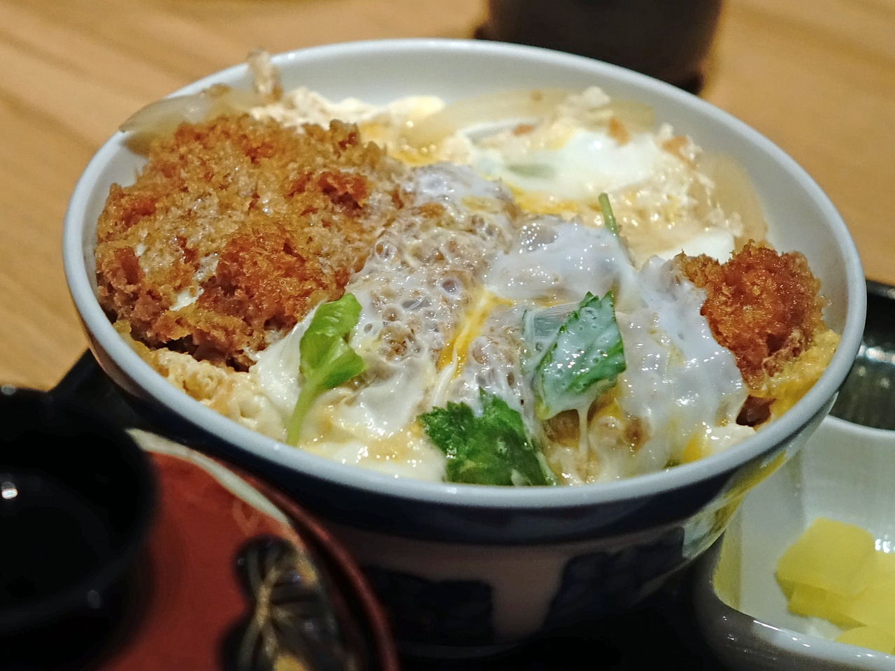

Pork Katsu Recipe
Pork katsu, a popular Japanese dish, showcases the perfect fusion of crispy, golden-brown breading and succulent pork cutlets. To prepare pork katsu, thinly sliced pork loin or pork tenderloin is tenderized, seasoned, coated in flour, dipped in beaten eggs, and finally coated with panko breadcrumbs before being deep-fried to a crisp perfection. The result is a crunchy exterior that gives way to juicy, flavorful pork with every bite. Pork katsu is often served with a tangy and savory tonkatsu sauce, which adds depth and richness to the dish. This delightful combination of textures and flavors makes pork katsu a beloved comfort food enjoyed by people of all ages in Japan and around the world.
Beyond its delicious taste, pork katsu holds a special place in Japanese cuisine and culture. Originating from tonkatsu, a variation made with breaded and fried pork cutlets, pork katsu has become a staple in Japanese households, restaurants, and bento boxes. It is commonly served as a main dish alongside rice, shredded cabbage, and miso soup, creating a well-balanced and satisfying meal. Pork katsu is also a versatile dish that can be adapted to suit different tastes and preferences, with variations such as chicken katsu and tofu katsu offering options for those seeking alternatives to pork. Whether enjoyed as a hearty meal or a quick snack, pork katsu continues to captivate food enthusiasts with its irresistible combination of crispiness, tenderness, and savory goodness.
Ingredients
- Pork loin or pork tenderloin, thinly sliced into cutlets
- All-purpose flour
- Eggs, beaten
- Panko breadcrumbs
- Salt and pepper, for seasoning
- Vegetable oil, for frying
For serving and garnish
- Tonkatsu sauce
- Shredded cabbage
- Lemon wedges
Directions
- Prepare the Pork Cutlets
- Start by preparing the pork loin or pork tenderloin. Trim any excess fat and slice the meat into thin cutlets, about ½ inch thick. Pound the cutlets lightly with a meat mallet to tenderize them evenly.
- Season the Pork
- Season the pork cutlets on both sides with salt and pepper to taste. You can also add other seasonings like garlic powder or onion powder for extra flavor if desired.
- Prepare the Breading Station
- Set up a breading station with three shallow dishes or bowls. Place all-purpose flour in one dish, beaten eggs in another dish, and panko breadcrumbs in the third dish.
- Coat the Pork Cutlets
- Dredge each pork cutlet in the flour, shaking off any excess.
- Dip the floured cutlets into the beaten eggs, ensuring they are coated evenly.
- Finally, coat the cutlets in panko breadcrumbs, pressing gently to adhere the breadcrumbs to the meat. Make sure the cutlets are fully coated with breadcrumbs.
- Fry the Pork Cutlets
- In a large skillet or frying pan, heat vegetable oil over medium-high heat until it reaches about 350°F (175°C).
- Carefully place the breaded pork cutlets into the hot oil, making sure not to overcrowd the pan. Fry the cutlets in batches if necessary.
- Cook the pork cutlets for 3-4 minutes on each side, or until they are golden brown and crispy.
- Once cooked, transfer the pork katsu to a plate lined with paper towels to drain any excess oil.
- Serve the Pork Katsu
- Slice the pork katsu into strips or serve them whole.
- Serve the pork katsu hot alongside shredded cabbage and tonkatsu sauce for dipping.
- Garnish with lemon wedges if desired, and enjoy your delicious homemade pork katsu!
With these instructions, you can easily recreate the crispy and flavorful Japanese dish, pork katsu, right in your own kitchen.